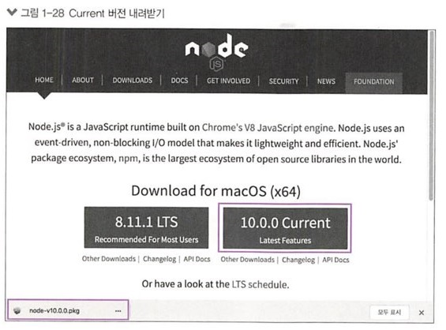
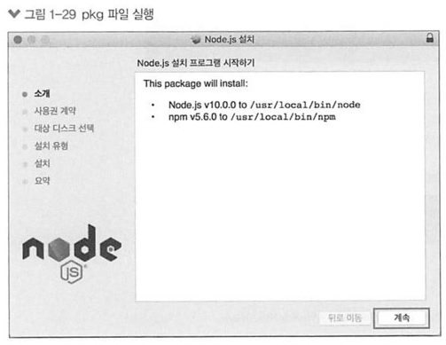
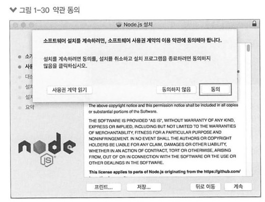
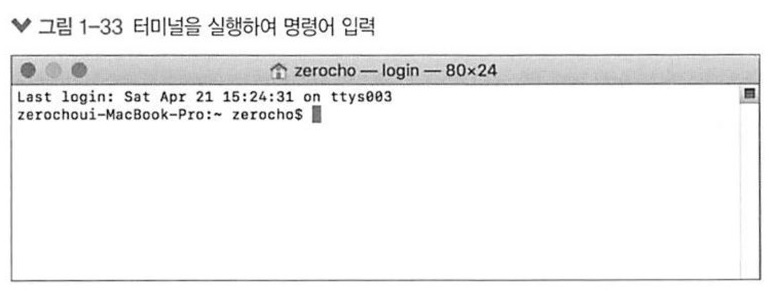

노드 설치하기
- 맥
-
이 책은 하이 시에라(10.13)를 기준으로 합니다. (노드 버전)
노드의 공식 사이트 https://nodejs.org)에 접속합니다.

LTS 버전으로 설치합니다. (Current 버전이어도 상관 없습니다.)
내려받은 pkg 파일을 실행한 후 계속 버튼을 누릅니다.

약관 동의 화면이 나오면 동의 버튼을 누릅니다.

설치 버튼을 누르면 설치가 시작됩니다.
설치 완료 화면이 나오면 닫기 버튼을 눌러 설치를 마칩니다.
이제 설치가 정상적으로 완료되었는지 확인하기 위해 터미널을 실행합니다.
먼저 cmd + space를 눌러 Spotlight를 실행한 후 terminal.app을 입력합니다.

다음 명령어를 입력해서 노드 버전이 올바르게 설치되었는지 확인합니다.
node -v
나중에 npm(노드 패키지 매니저)을 사용해야 하므로 npm이 제대로 설치되었는지도 확인합니다.
npm -v
이 책의 버전과는 다를 수 있지만, npm 버전이 명령 프롬프트 창에 뜬다면 설치에 성공한 것입니다.
만약 버전이 뜨지 않고 에러 메시지가 나온다면 노드를 처음부터 다시 설치해야 합니다.